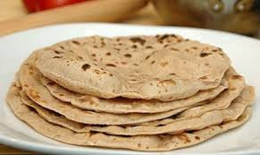
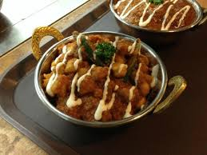

인도 사람들은 대다수가 힌두교를 믿고 있어서 국민의 80%가 채식주의자입니다
채식에 종교적 신성을 부여하며 소를 도살하는 것을 금기시합니다. 인도 사람들의
채소 요리는 세계에서 많은 인정을 받고 있습니다.
향신료가 기본
인도의 향신료 수는 100여 종이 넘으며, 일반 가정에서도 20여가지의 향신료를 보유하고 있습니다.
인도의 대표 식품인 커리에는 15가지의 향신료가 첨가됩니다. 마살라는 각종 향신료를
볶아서 가루를 낸 것으로 향신료의 배합 정도에 따라 무한한 맛을 창조할 수 있습니다.
콩과 유제품을 많이 사용
'달'은 콩을 넣어 만든 요리를 통칭합니다. 신분의 귀천, 채식/육식자 상관없이 먹는 일상요리입니다.
'기이'는 버터 기름으로 고급 요리나 과자를 만드는데 사용합니다.
'라시'는 요구르트에 설탕과 물을 혼합한 인도의 대중음료 입니다.
지역에 따른 음식문화의 차이
분류
남부 인도
북부 인도
종교(대다수)
힌두교-->쇠고기를 섭취
이슬람교-->돼지고기를 섭취
조리 방법
코코넛 밀크와 크림을 많이 사용
향신료를 강하게 사용
요구르트 밑 다른 혼합물을 많이 사용
대부분의 음식을 약하게 조미
식기
바나나 잎을 식기로 사용
금속제 그릇을 사용
인도 대표 음식
빵(로티)
인도인의 주식으로 차파티, 푸리, 난, 파라타가 있습니다.
차파티는 다른 빵들의 베이스가 되는 빵입니다.
난은 차파티를 발효시켜 구운 것이고, 푸리는 차파티를 잘라 기름에 튀긴 것입니다.
차파티
커리
채소, 치즈, 고기 등에 향신료를 넣고 걸쭉하게 끓인 음식을 모두 커리라고 통칭합니다.
고기와 채소 중 한 가지만 사용하는 것이 일반적입니다. 커리는 밥이나 차파티에 얹어 먹습니다.
계피, 정향, 육두구 등의 여러 향신료들을 사용합니다. 향신료는 독특한 맛을
내며 식욕증진, 소화건위, 방부제의 역할을 합니다.국민 대다수가 이슬람교 혹은
힌두교이기 때문에 양고기를 이용한 카레인 '머튼 커리'를 즐겨 먹습니다.
머튼 커리
탄두리 음식
탄두르 화덕에서 익힌 음식으로, 인도 북부 사람들이 즐겨 먹습니다.
그중에서도 탄두리 치킨은 우리나라에 널리 알려져 있습니다.